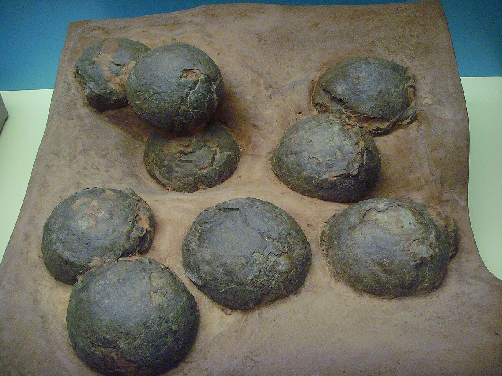
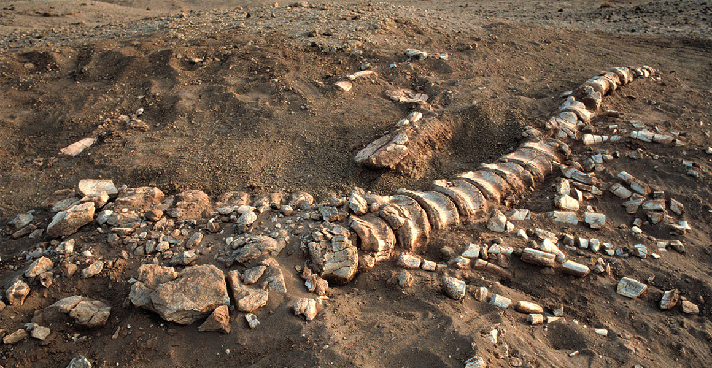
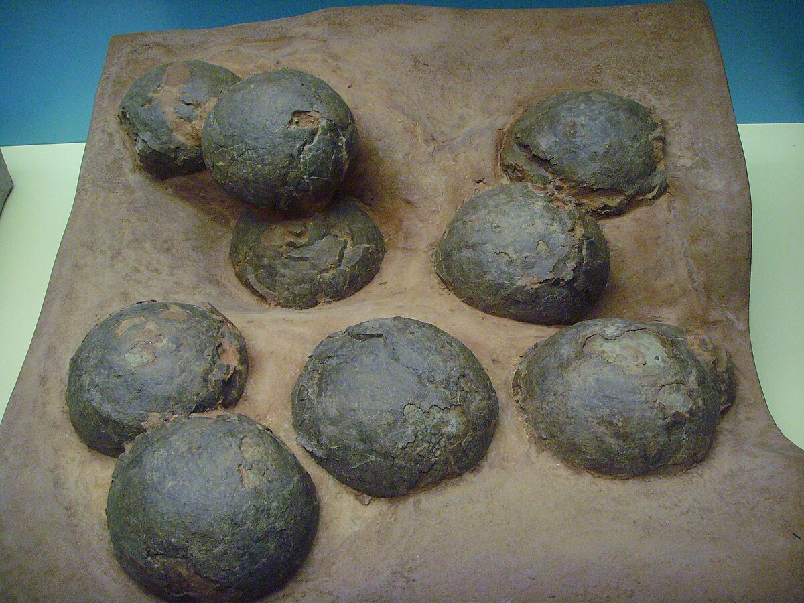
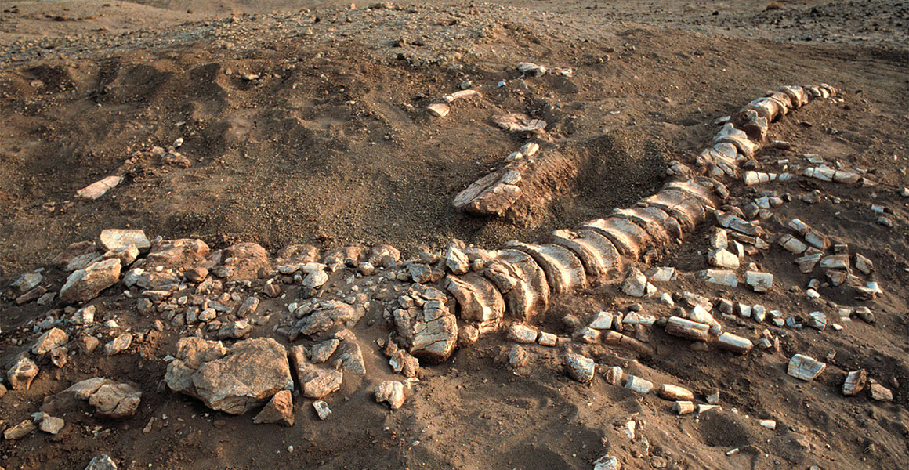

About Dinosaur Fossils
Dinosaur fossils are the preserved remains or traces of ancient reptiles that lived millions of years ago.
These fossils are found in sedimentary rocks and give us valuable insight into prehistoric life.
From bones and teeth to footprints and eggs, every fossil tells a story about Earth's ancient history.
Major Discoveries
Paleontologists around the world have uncovered some of the most remarkable fossil specimens:
- The first Tyrannosaurus rex skeleton discovered in 1902 in Montana, USA.
- The Archaeopteryx fossil, bridging the gap between dinosaurs and birds.
- Fossilized dinosaur eggs found in Mongolia's Gobi Desert.
- Velociraptor fossils with preserved claws and skulls.
- A herd of Triceratops fossils found together showing social behavior.
Why Fossils Matter
Fossils are not just remnants of the past; they are records of evolution and extinction.
Studying fossils helps scientists understand how life has changed over millions of years,
how continents have shifted, and how climates have transformed. They also inspire curiosity
about Earth's deep history and the delicate balance of life on our planet.

 


